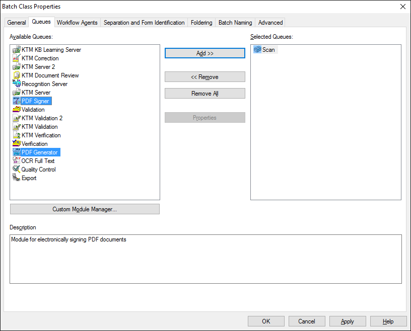

A Tungsten Capture Administration modulban válasszuk ki azt a kötegosztályt (batch class), melyben a PDF Signer for Tungsten Capture modult használni szeretnénk, majd kattintsunk rajta a jobb egérgombbal és válasszuk a Properties (tulajdonságok) menüpontot. indítása után válasszuk ki azt a dokumentumosztályt, amelynek beállításait módosítani szeretnék. Minden dokumentumosztályhoz eltérő beállítások adhatók meg, így biztosítva az esetelegesen eltérő jogszabályi követelményeknek való megfelelést. A dokumentumosztály kiválasztása után kattintsunk rajta jobb egérgombbal.
Kötegosztály helyzetérzékeny menüje
A megjelenő ablakban kattintsunk a Queues (folyamatelemek) fülre.

Kötegosztály folyamatelemeinek beállítása
A bal oldali Available queues (elérhető folyamatelemek) listában válasszuk ki a PDF Generator-t és kattintsunk a középen lévő Add >> (Hozzáadás) gombra, mire a PDF Generator átkerül a jobb oldali Selected queues (kiválasztott folyamatelemek) listába. A lépést ismételjük meg a PDF Signer folyamatelemmel is. Ezt követően a Selected queues (kiválasztott folyamatelemek) listában fogjuk meg az egérbal gombját nyomva tartva a PDF Signer-t és húzzuk a PDF Generator alá.
Figyelem! A Selected Queues (kiválasztott folyamatelemek) listába kötelező felvenni mind a PDF Generator, mind a PDF Signer modulokat, és a PDF Generator modulnak a PDF Signer előtt kell lennie!
Természetesen a listában lehet több folyamatelem is, sőt a PDF Generator és a PDF Signer modulok közé további folyamatelemek ékelődhetnek (pl. validálás). A Selected Queues (kiválasztott folyamatelemek) listának az alábbiak szerint kell kinéznie:

Kötegosztály folyamatelemeinek helyes beállítása
Copyright © 2025. Doc-Soft Kkt. Minden jog fenntartva.